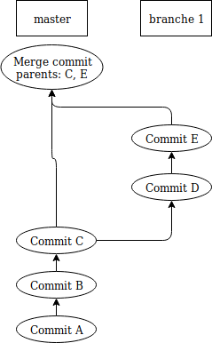
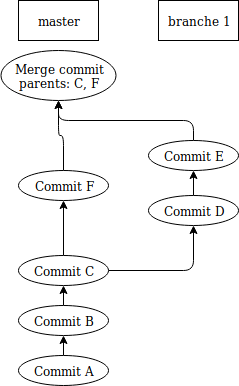
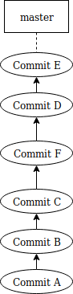

git clone https://github.com/ekse/rdm git status git add git commit git push
git config --global alias.co checkout git config --global alias.br branch git config --global alias.ci commit git config --global alias.st status
Un branche est l'équivalent d'un bookmark vers un commit. Créer une branche ne coûte rien.
# Lister les branches git branch git branch -a git branch -av # Créer une branche git checkout -b |branch_name| # Renommer une branche git branch -m |new_name| # Changer de branche git checkout |branch_name| # Effacer un branche git branch -D |branch_name|
Toujours travailler sur une branche, ne pas commiter directement sur master. Github et Bitbucket peuvent être configurés pour l'interdire.
git log git log |filename| git log --stat git show |commit| git blame |filename|
git grep -n |expr| # Cherche dans le contenu sur le git # Cherche à partir du dossier courant # Souvent plus efficace/pertinent que grep directement
# Checkout d’un commit spécifique git checkout |commit| git checkout -b |branch| |commit| # Detached HEAD" signifie un checkout qui n'est pas sur # une branche.
git add |filename| git add -u git reset |filename| git reset git rm |filename|
git diff git diff --cached git diff |branch| git diff |commit| git difftool
Sélection de hunks.
git add -p |filename|
Permet de commiter seulement une partie des modifications à un fichier.
.gitignore
builds/ *.bak
Sauvegarde temporaire avec git stash
git stash git stash save |name| git stash -u git stash list git stash apply git stash pop
Revenir au départ
git checkout |filename| git reset --hard git clean -f
Merge
Merge
Rebase
Squash
Remplace les commits de la branche par seul nouveau commit